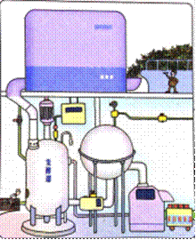

1.4 蛋白质工程的崛起
19S3年，美国某基因公司的一名科学家提出了蛋白质工程这一名词。随着分子生物学、晶体学以及计算机技术的迅猛发展，蛋白质工程已取得了很大的进展。目前，它已成为研究蛋白质结构和功能的重要手段，并将广泛应用于制药和其他工业生产中。
蛋白质工程崛起的缘由
为什么要进行蛋白质工程的研究呢？我们知道，将一种生物的基因转移到另一种生物体内，后者可以产生它本不能产生的蛋白质，进而表现出新的性状，这就是基因工程的实质。基因工程在原则上只能生产自然界已存在的蛋白质，这些天然蛋白质是生物在长期进化过程中形成的，它们的结构和功能符合特定物种生存的需要，却不一定完全符合人类生产和生活的需要。例如，干扰素是动物体内的一种蛋白质，可以用于治疗病毒的感染和癌症，但在体外保存相当困难。如果将其分子上的一个半胱氨酸变成丝氨酸，那么在-70℃的条件下，可以保存半年。又如，前面我们提到玉米中赖氨酸的含量比较低，原因是赖氨酸合成过程中的两个关键酶——天冬氨酸激酶和二氢吡啶二羧酸合成酶的活性，受细胞内赖氨酸浓度的影响较大，当赖氨酸浓度达到一定量时，就会抑制这两个酶的活性。所以 赖氨酸含量很难提高。如果我们将天冬氨酸激酶的第352位的苏氨酸变成异亮氨酸，将二氢吡啶二羧酸合成酶中104位的天冬酰胺变成异亮氨酸，就可以使玉米叶片和种子中的游离赖氨酸分别提高5倍和2倍。还有许多工业用酶也是在改变天然酶的特性后，才使之适应生产和使用需要的。
你知道国际人类蛋白质组计划吗？
它与蛋白质工程有什么关系？
我国科学家承担了什么任务？
对天然蛋白质进行改造，你认为应该直接对蛋白质分子进行操作，还是通过对基因的操作来实现？
蛋白质工程的基本原理
蛋白质工程是怎样进行的呢？蛋白质工程的目标是根据人们对蛋白质功能的特定需求，对蛋白质的结构进行分子设计。由于基因决定蛋白质，因此，要对蛋白质的结构进行设计改造，最终还必须通过基因来完成。
我们知道，天然蛋白质合成的过程是按照中心法则进行的：基因→表达（转录和翻译）→形成氨基酸序列的多肽链→形成具有高级结构的蛋白质→行使生物功能：而蛋白质工程却与之相反，它的基本途径是：从预期的蛋白质功能出发→设计预期的蛋白质结构→推测应有的氨基酸序列→找到相对应的脱氧核苷酸序列（基因）（图1-29）。
图1-29 蛋白质工程流程图
讨论
某多肽的一段氨基酸序列苷酸序列是：.......—丙氨酸—色氨酸—赖氨酸—甲硫氨酸—苯丙氨酸—......
讨论：
2.确定目的基因的碱基序列后，怎样才能合成或改造目的基因（DNA）？
通过以上分析和讨论可以看出，蛋白质工程是指以蛋白质分子的结构规律及其生物功能的关系作为基础，通过基因修饰或基因合成，对现有蛋白质进行改造，或制造一种新的蛋白质，以满足人类生产和生活的需求。也就是说，蛋白质工程是在基因工程的基础上，延伸出来的第二代基因工程，是包含多学科的综合科技工程领域。
异想天开
能不能根据人类需要的蛋白质的结构，设计相应的基因，导入适合的细菌中，让细菌生产人类所需要的蛋白质食品呢？

粮食的工厂生产示意图
思考与探究
1. 蛋白质工程是应怎样的社会需求而崛起的？工程有什么不同？这说明社会需要与科技发展之间有什么关系？
2.蛋白质工程操作程序的基本思路与基因工程有什么不同？
3.你知道酶工程吗？绝大多数酶都是蛋白质，酶工程与蛋白质工程有什么区别？有兴趣的话,请搜集这方面的资料。
蛋白质工程的进展和前景
蛋白质工程取得的进展向人们展示出诱人的前景。例如，科学家通过对胰岛素的改造，已使其成为速效型药品。如今，生物和材料科学家正积极探索将蛋白质工程应用于微电子方面。用蛋白质工程方法制成的电子元件，具有体积小、耗电少和效率高的特点，因此有极为广阔的发展前景。
蛋白质工程是一项难度很大的工程，目前成功的例子不多，主要是因为蛋白质发挥功能必须依赖于正确的高级结构，这种高级结构十分复杂（图1-30），而目前科学家对大多数蛋白质的高级结构的了解还很不够，要设计出更加符合人类需要的蛋白质还需经过艰辛的探索。我们相信，随着科学技术的深入发展，蛋白质工程将会给人类带来更多的福音。
图1-30血红蛋白的结构(α1、α2、β1和β2 表示的四个亚基。)
进展追踪
通过报刊、杂志、互联网或其他媒体搜集资料，了解基因工程的新进展，就自己感兴趣的领域，自定选题，写一第专题综述报告。
参考选题：1.我国的转基因农作物；2.我国的转基因动物；3.转基因食品在我国；4.基因治疗的因难和前景；5.基因芯片与疾病诊断。